Congratulations On Your Free Download
It's been sent directly to your inbox
But Wait!
Before You Go, I've Got a Quick Question For You?
How would you like to supercharge your immune system,
slow down the effects of aging and prevent illness using
In just a moment I’m going to share with you the rediscovered strange techniques the
Egyptians used to do exactly that!
But first, I want to introduce you to Doran, who healed herself of a lifelong illness and found a natural way to never get sick again...
I’m Amy, the lead researcher at Heal Me Gold. For the past 35 years, we’ve been creating natural remedies using the healing properties of gold. Specifically gold particles.
We’re the only laboratory approved by Canada's health ministry to create healing gold. So if you feel like you’re ageing quickly, you’re suffering from a lifelong affliction or you get sick far too easily - even though you take a range of vitamins...
Then listen closely to this story about Doran. If you believe her you’ll be rewarded, and if you're curious, the story’s interesting enough to be worth your time
Doran had reached peak illness many years ago. She’d point blank refused to step foot outside of her house, so she wouldn't have to breathe “any allergens”.
She had Bronchitis, any slight irritation to her airways would see a massive reaction occur in her body.
First, her airways would swell up
Next, she’d find herself in a non-stop coughing fit
Later she couldn’t breathe and would feel like she was suffocating
Even worse; each time she was caught in public, coughing involuntary, she’d feel the heat of people's eyes pierce through her. It was embarrassing.
Any coughing fit could last between a week to a year, it was unbearable. Sadly her affliction meant she had to give her loving cats up for adoption, leaving her in a cold empty house all alone.
She couldn’t risk any fur, dirt, or allergens, causing her to experience her Bronchitis. Naturally, she felt lonely and trapped. In her own words:
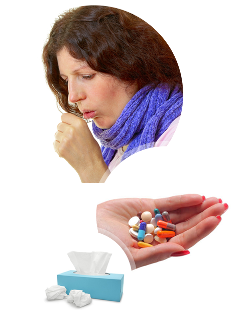
This is no way for a 54 year old to be living.
She’d tried everything. Fluids to make her lungs less irritant, acids to break up the thick mucus, painkillers to make her affliction ‘bearable’, antibiotics…. everything.
Driven by pain and discomfort she tried a rare immunosuppression treatment to stop her immune system from “overreacting”.
Amazingly it worked very well for Doran, but it came at a cost that she was well aware of.
As Christmas approached, even though she stayed away from the public, she caught pneumonia.
For 6 long, painful weeks, she was confined to a sterile room whilst doctors prodded, jabbed and drew blood from her.
She vowed if she made it through, to accept her low quality of life. Medicated on painkillers and fluids.
Her daughter saddened by her mother's surrender to her affliction, started her own research into alternative medicines...
Eventually, Doran made enough of a recovery to leave the hospital, she stayed with her daughter whilst nursed back to full health.
Her Daughter Tried Experimenting
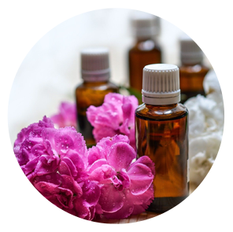
She tried aromatherapy. But Doran’s lungs didn’t agree with the fragrances … so that didn’t work.
Then she tried a balneotherapy mixture with various different minerals, and weirdly, her mother felt a little better. She could breathe clearly whilst in the bath.
So they tried more and more minerals, to figure out which one’s work the best: Through trial and error, they found metallic salts high in magnesium worked incredibly well.
So well, Doran felt good enough to dump her painkillers for a short while
Confused as to why Magnesium helped Dorans condition, they took to the internet. Where they discovered the Bio-liberation effect magnesium has with its Ions.
They started looking into what other metals have stronger Bio-liberation effects;
Through their research they learned gold was the best and has been used by civilisations for It’s many healing effects:
Egyptians used it to fight ageing and to treat their skin. With Queen Cleopatra using gold as a facemask, and ingesting it for it’s healing properties.
In the middle ages they used gold for arthritis (many still do today)
In 1493 Paracelsus the founder of modern pharmacology used gold and other metallic minerals to heal people of their diseases.
It was at this point, they started wondering if perhaps golds secret healing and anti-ageing powers had been lost in time.
Curious as to it’s effects, Doran searched the internet and came across Heal Me Gold’s unique blend of true edible Gold particles. After the first week, she felt nothing. Then the next week, she felt nothing too.
Doran began to feel skeptical about her recent purchase, but her daughter encouraged her to continue with her self-medication.
And after a few weeks, Doran woke up to a light feeling of warm euphoria. Her breathing was completely painless and her Bronchitis went into complete remission.
Confused she visited her doctor with the product, looking for an explanation.
She showed the ingredients to her doctor and he recommended Doran continue using the product, as she was experiencing “unexplainable, impressive results”.
We later received this letter from Doran:
From:
Doran Smith doran2@mail.com
21 days ago
Dear Heal Me Gold,
Who’d have thought?! After 8 years of suffering by myself, I’ve finally found something that works. Now after 1 year of using the product, I keep experiencing new, better changes in my body. Even my friends are commenting on how good I look and happy I am.
The pain and irritation in my lungs is completely gone, my joints feel stronger, and I even bought myself some new pets! I’m so happy I can finally have kittens back in my home again.
I decided to move closer to the city (something I'd never dream of doing 8 years ago due to the air) so I can meet new people and start enjoying my life. I love my new flat, it’s got tons of natural light and it’s easy to make new friends here.
I’m doing all sorts of classes now, like yoga and spinning. My friends wonder where I get all this energy from. Honestly I don’t know if it’s from heal me gold, or just because I’m making the most of not being sick (I haven’t been sick in over a year.. Touch wood!). But I can’t deny the fact that your product has played a huge role in getting me here.
I would recommend this product to anyone suffering with any uncontrollable inflammation in their body; or even as a natural way to prevent yourself from getting sick. Just take the leap of faith like I did Sincerely,Doran.
"So What Powers, Heal Me Gold To Be So Good At Preventing Illness, Healing Diseases and Slowing Ageing Down?"
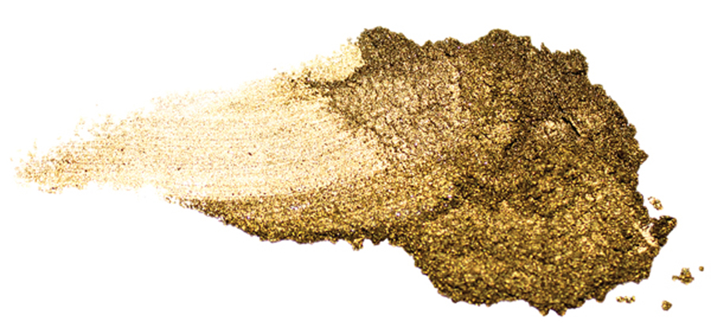
Well, gold draws it’s power from the natural Bio-Liberation effect it has on the human body. The particles are drawn to high activity regions, such as the brain, inflamed areas, and the skin. Once at the activity site gold particles emit vibrations that help restore the cells to their natural function.
This gold bio-liberation has been tested on patients with rheumatoid arthritis where gold plates were inserted into the patient's inflamed joints.
Under careful observation, the gold was found to have moved intracellularly, resulting in a 30% reduction in the swelling of the joints.This led doctors to conclude “Injectable gold has an important clinically and statistically significant benefit in the short term of patients with rheumatoid arthritis.”
Other Bio-liberating effects have been noted in the electric connection between the nerves and the brain.
By strengthening the connection, weakened immune systems are made stronger and more resilient - feeding it with the perfect mineral for fighting diseases.
Just like the body needs Iron in the blood, or Zinc and Magnesium to aid sleeping. It too needs Gold to strengthen your immune system and fight diseases and age related illnesses
The Complete Known List Of Gold’s Health Benefits
oftening the outer layers of skin so your skin looks more rejuvenated and emits a younger looking glow
Intracellular activity so you can fight foreign diseases that would otherwise lower your quality of life
Reduces inflammatory diseases so you can experience less irritation and more comfort
Stimulates cells and nerves so you can improve your blood circulation
Reduces pain so your body aches less and you can feel much younger
Stimulates cells and nerves so you can improve your blood circulation
Improving the connections between your nerves and brain so you can protect your brain from degenerative diseases and fight illnesses like colds and flus before they happen
Fighting arthritis so you can enjoy a pain free life
Increases cell turnover so you can slow the effects of premature ageing
Helps fight hot flashes and chills associated with menopause
Increases cognitive function so you can feel better focused and mental sharpness
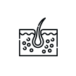
Stimulates the basal cells of skin so you can diminish fine lines, wrinkles and age spots
What Makes Heal Me Gold So Special?
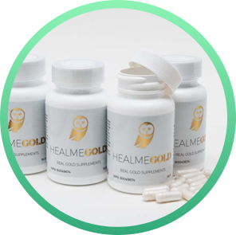
Our research team has been working tirelessly for 35 years to perfect our unique formula of edible gold.
We found our gold works best by breaking it down to tiny, microscopic pieces using a $120k hydraulic press. Which exerts 300 tons of pressure splintering the gold in the process.
Gold also needs a delicate blend of vitamins to help with the absorption:
Vitamin B6, Magnesium and Calcium. Whilst each ingredient has their own unique health benefit, the combined formula has a powerful synergy effect that helps the gold move into your cells.
Without these above ingredients, we’ve found it’s almost impossible to experience the full health benefits associated with gold, so we've ensured each batch is loaded with the essential vitamins and minerals.
How Do We Guarantee That Heal Me Gold Is The Best Gold Supplement You Can Buy?
For starters, you’ll be pleased to learn our 35 years of research into the healing properties of Gold.
Accompanied with the precision and care that goes into each batch. Has earned us the seal of approval from Canada's Health Board & FDA approval to create and distribute the HealMeGold supplement.
Also:
As you can see, that’s quite an extensive list, and at this point you’re probably wondering how much it’s going to cost you to receive all of these wonderful benefits?
Well, as you can see from this below graph Gold has steadily been rising in price, as increasingly more people want it.
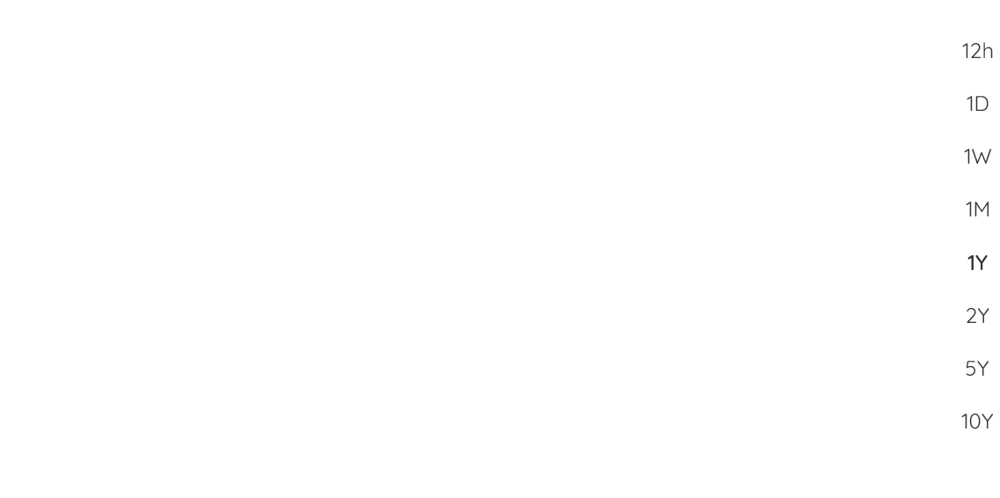
So for only $20 per week (the cost you probably spend on take out food) you can experience all of our health and anti ageing benefits:
Fight
ageing
Fight
sicknesses
Fight
tiredness
Boost
collagen
Boost
mental alertness
Boost your
immune system
Sound good? awesome.
Imagine how great you will feel in 3, 6 even 9 months after starting today? You may begin to wonder what you’d do with your new lease of life.
So How Fast Will You See Results? Well Lets See What You’ve Had To Say So Far...
Here's What To Do Next
Look, our 2016 December gold supply won’t last forever, and soon, reluctantly we’ll have to increase our prices. So this is the cheapest HealMeGold will ever be.
Simply chose your order today 1 bottle , 3 bottles or 4 bottles. We will not supply any more than 4 bottles...
Even though we have many requests for a 5 bottles, even 7 bottles, we want to ensure you always have the freshest quality of edible gold.
So chose the amount you wish to order today, and secure the low price of our unique blend of Heal Me Gold.
1 Bottle (up to 2 months supply)
$ 160
3 Bottles (up to 6 months supply)
$ 357
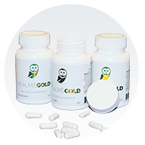
4 Bottles (up to 8 months supply)
$ 477
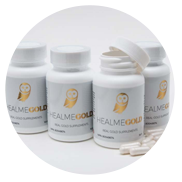
100% Secure Checkout
Frequently Asked Questions: